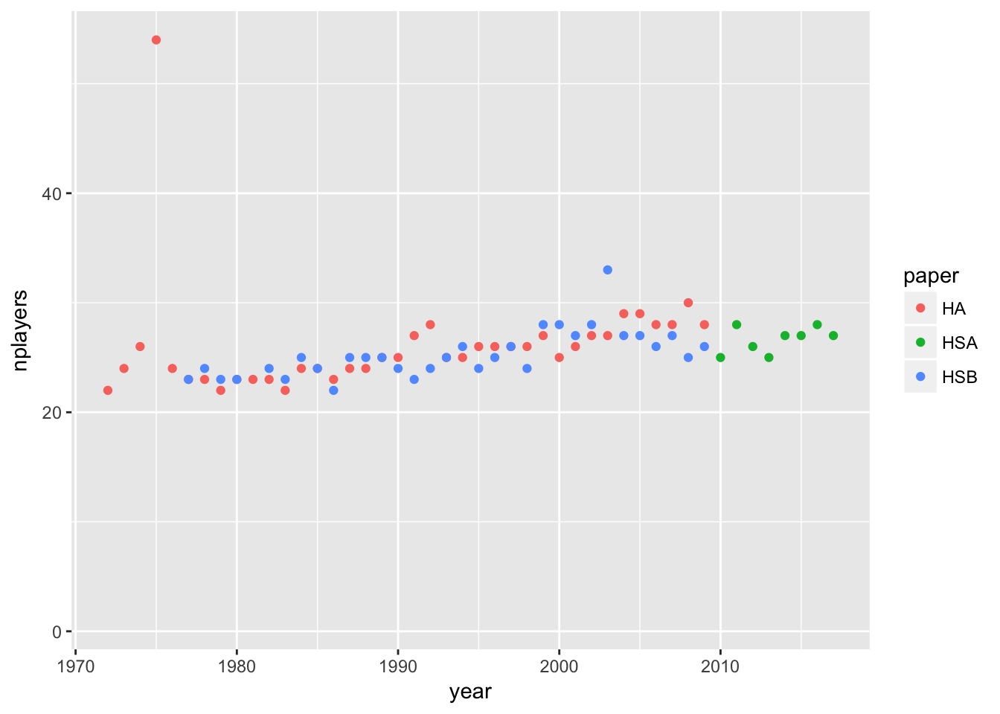
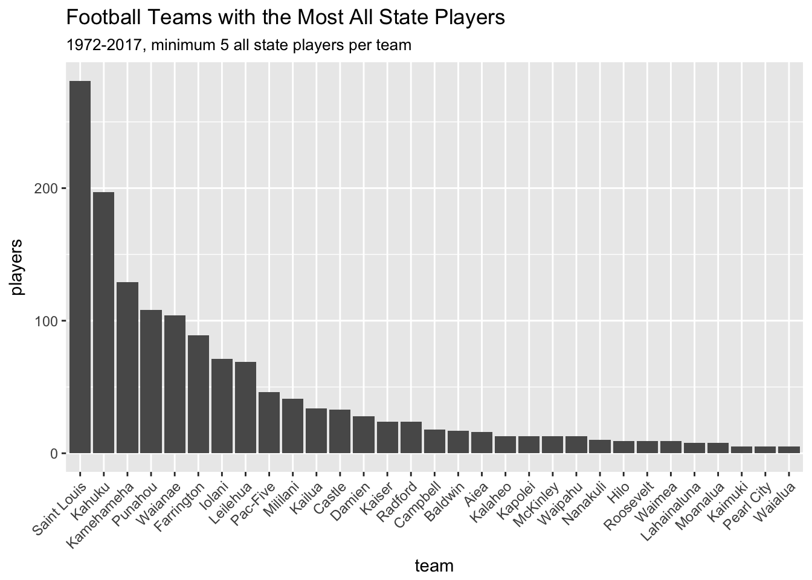
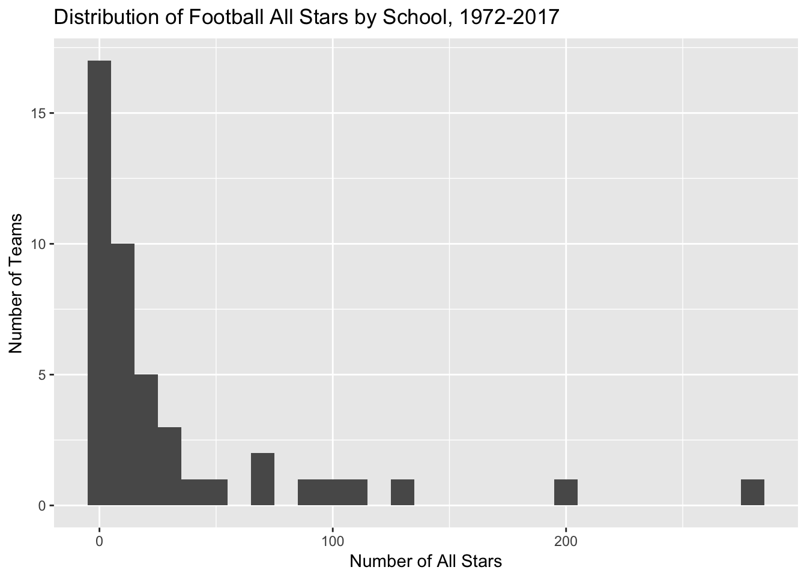
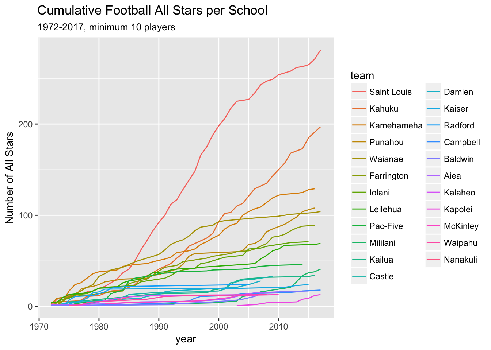

The local newspaper released a dataset of high school all stars from 1972 to 2017, and I thought it might be interesting to analyze the information. Some interesting questions were what schools have the most all stars, at what positions, and how this has changed over the years. I suspect that Saint Louis, Kahuku, and Waianae will be the top teams but who knows? Maybe there’s a secret dynasty that I never heard of.
First I loaded the packages I would need.
library(googlesheets)
suppressPackageStartupMessages(library(dplyr))
library(ggplot2)I loaded the dataset from my Google Drive. I had a little issue with an error message but it turned out that there was a zombie R instance using the port and a quick kill was all that was needed. Method for that came from this post.
my_sheets <- gs_ls()
fb <- gs_title("HI_football_allstars")## Sheet successfully identified: "HI_football_allstars"x <- gs_read(fb)## Accessing worksheet titled 'Sheet1'.## Parsed with column specification:
## cols(
## year = col_integer(),
## position = col_character(),
## first = col_character(),
## last = col_character(),
## team = col_character(),
## poy = col_character(),
## paper = col_character()
## )First I looked at the variables and made the positions and paper names into factors.
glimpse(x)## Observations: 2,014
## Variables: 7
## $ year <int> 2017, 2017, 2017, 2017, 2017, 2017, 2017, 2017, 2017,...
## $ position <chr> "RB", "QB", "REC", "REC", "REC", "RB", "OL", "OL", "O...
## $ first <chr> "Enoch", "Chevan", "Mitchell", "Jonah", "Scott", "Kah...
## $ last <chr> "Nawahine", "Cordeiro", "Quinn", "Panoke", "McLeod", ...
## $ team <chr> "Kahuku", "Saint Louis", "Saint Louis", "Saint Louis"...
## $ poy <chr> NA, "OPOY", NA, NA, NA, NA, NA, NA, NA, NA, "COY", NA...
## $ paper <chr> "HSA", "HSA", "HSA", "HSA", "HSA", "HSA", "HSA", "HSA...x$position <- factor(x$position)
x$paper <- factor(x$paper)Historically there were two newspapers in Honolulu, the Honolulu Star-Bulletin and the Honolulu Advertiser. These newspapers published separate all star lists until they merged in early 2010 and became the Honolulu Star-Advertiser.
I calculated the size of the all star teams over the years.
# players over years
x %>% mutate(one = 1) %>% group_by(year, paper) %>% summarize(nplayers = sum(one)) %>%
ggplot(aes(x = year, y = nplayers, color = paper)) + geom_point()## Warning: Removed 1 rows containing missing values (geom_point).
Looking at the data there’s one year that’s an outlier (and one NA observation). The 1975 list is odd in that there are 12 defensive linemen and 7 linebackers chosen for the team. I’d guess that means they published first and second team players in this list, but it’s not clear who would have been first team and who second team.
x %>% filter(year == 1975)## # A tibble: 54 x 7
## year position first last team poy paper
## <int> <fct> <chr> <chr> <chr> <chr> <fct>
## 1 1975 coach Cal Chai Kamehameha <NA> HA
## 2 1975 E Casey Kunitomo Kamehameha <NA> HA
## 3 1975 E Jim Gesser Kaiser <NA> HA
## 4 1975 E Ben Apuna Waipahu <NA> HA
## 5 1975 E Derek Yamada Iolani <NA> HA
## 6 1975 E Aaron Lorenzo Kamehameha <NA> HA
## 7 1975 E Charles Pico St. Anthony <NA> HA
## 8 1975 E David Corbelli Hilo <NA> HA
## 9 1975 T Dayle Turner Kamehameha <NA> HA
## 10 1975 T Robert Hema Waianae <NA> HA
## # ... with 44 more rowsx %>% filter(year == 1975) %>% group_by(position) %>% summarize(n())## # A tibble: 10 x 2
## position `n()`
## <fct> <int>
## 1 C 2
## 2 coach 1
## 3 DB 6
## 4 DL 12
## 5 E 7
## 6 G 4
## 7 LB 7
## 8 QB 2
## 9 RB 8
## 10 T 5The NA year is just one row of all NA entries so I’ll just go ahead and drop it.
x %>% filter(is.na(year))## # A tibble: 1 x 7
## year position first last team poy paper
## <int> <fct> <chr> <chr> <chr> <chr> <fct>
## 1 NA <NA> <NA> <NA> <NA> <NA> HSAwhich(is.na(x$year))## [1] 28x <- x[-which(is.na(x$year)),]Which School Has the Most All Stars
For a first pass I looked at the raw number of times each school was listed. This list included duplicates, for example when Mark Tuinei was selected as an all star by both the Star Bulletin and the Advertiser in 1977.
# school with most players (not deduplicated)
x %>% group_by(team) %>%
summarize(nplayers = n()) %>%
arrange(desc(nplayers))## # A tibble: 45 x 2
## team nplayers
## <chr> <int>
## 1 Saint Louis 422
## 2 Kahuku 278
## 3 Kamehameha 174
## 4 Waianae 149
## 5 Punahou 133
## 6 Farrington 119
## 7 Leilehua 93
## 8 Iolani 89
## 9 Pac-Five 63
## 10 Castle 47
## # ... with 35 more rowsAfter accounting for the duplicated players, Saint Louis had the most first team players, followed by Kahuku. The third place team (Kamehameha), had fewer than half the number that Saint Louis had.
x %>% mutate(name = paste(first, last)) %>%
group_by(year) %>%
distinct(name, .keep_all = T) %>%
group_by(team) %>%
summarize(nplayers = n()) %>%
arrange(desc(nplayers))## # A tibble: 45 x 2
## team nplayers
## <chr> <int>
## 1 Saint Louis 281
## 2 Kahuku 197
## 3 Kamehameha 129
## 4 Punahou 108
## 5 Waianae 104
## 6 Farrington 89
## 7 Iolani 71
## 8 Leilehua 69
## 9 Pac-Five 46
## 10 Mililani 41
## # ... with 35 more rowsMaybe a better way to look at it would be an ordered bar chart. Help for the code came from here.
x %>% mutate(name = paste(first, last)) %>%
group_by(year) %>%
distinct(name, .keep_all = T) %>%
group_by(team) %>%
summarize(nplayers = n()) %>%
arrange(-nplayers) %>%
mutate(team = factor(team, team)) %>% # to sort the teams
filter(nplayers > 4) %>%
ggplot(aes(x = team, y = nplayers)) +
geom_bar(stat = "identity") +
# coord_flip() +
labs(title = "Football Teams with the Most All State Players",
subtitle = "1972-2017, minimum 5 all state players per team",
y = "players") +
theme(axis.text.x = element_text(angle=45, hjust = 1))
x %>% mutate(name = paste(first, last)) %>%
group_by(year) %>%
distinct(name, .keep_all = T) %>%
group_by(team) %>%
summarize(nplayers = n()) %>%
ggplot(aes(x=nplayers)) +
geom_histogram(binwidth = 10) +
ggtitle("Distribution of Football All Stars by School, 1972-2017") +
labs(x = "Number of All Stars", y = "Number of Teams")
How Have Team Strengths Changed over Time?
Some schools were powerhouses back in the day but have not been producing all stars lately. Examples include Pac Five and Kaiser. I thought it would be neat to plot the number of all stars per year by team.
# Get rank order of teams
team_rank <- x %>% mutate(name = paste(first, last)) %>%
group_by(year) %>%
distinct(name, .keep_all = T) %>%
group_by(team) %>%
summarize(nplayers = n()) %>%
arrange(-nplayers) %>%
mutate(team = factor(team, team))
# Find teams with at least 10 all stars
min_ten <- x %>% mutate(name = paste(first, last)) %>%
group_by(year) %>%
distinct(name, .keep_all = T) %>%
group_by(team) %>%
summarize(nplayers = n()) %>%
arrange(-nplayers) %>%
mutate(team = factor(team, team)) %>% # to sort the teams
filter(nplayers > 9)
# Create graph
x %>%
# Deduplicate players
mutate(name = paste(first, last), one = 1) %>%
group_by(year) %>%
distinct(name, .keep_all = T) %>%
# Create running count of all-star players by team
arrange(year) %>%
group_by(team) %>%
mutate(cumulative = cumsum(one)) %>%
# Group by team, sort, and filter
group_by(year, team) %>%
summarize(nplayers = max(cumulative)) %>%
arrange(-nplayers) %>%
mutate(team = factor(team, levels(team_rank$team))) %>% # to sort the teams
filter(team %in% min_ten$team) %>% # limit to only teams with > 10 all stars
# Create graph
ggplot(aes(x = year, y = nplayers, color = team)) +
geom_line() +
labs(title = "Cumulative Football All Stars per School",
subtitle = "1972-2017, minimum 10 players",
y = "Number of All Stars")
It turned out that Saint Louis has been dominant for decades but Kahuku has come on strong lately. Kahuku’s rise has correlated with a slight downturn in Kamehameha and Waianae. It’s possible that Kamehameha used to get Kahuku players to come to their school but now they choose to stay home. On the other hand it doesn’t seem likely that Waianae’s players moved to Kahuku to play. Future steps might be looking at the early decades since they’re all crushed together there at the bottom of the chart.
Position U
I hypothesized that some schools might have more all stars at certain positions than other schools. Here’s the list for quarterback.
x %>%
mutate(name = paste(first, last), one = 1) %>%
group_by(year) %>%
distinct(name, .keep_all = T) %>%
group_by(position, team) %>%
summarize(nplayers = n()) %>%
filter(position == "QB") %>%
arrange(-nplayers)## # A tibble: 13 x 3
## # Groups: position [1]
## position team nplayers
## <fct> <chr> <int>
## 1 QB Saint Louis 19
## 2 QB Leilehua 5
## 3 QB Pac-Five 5
## 4 QB Punahou 5
## 5 QB Iolani 4
## 6 QB Kahuku 3
## 7 QB Waianae 3
## 8 QB Mililani 2
## 9 QB Farrington 1
## 10 QB Kaiser 1
## 11 QB Kamehameha 1
## 12 QB Lahainaluna 1
## 13 QB McKinley 1Running back was surprisingly different. Farrington came out on top here.
x %>%
mutate(name = paste(first, last), one = 1) %>%
group_by(year) %>%
distinct(name, .keep_all = T) %>%
group_by(position, team) %>%
summarize(nplayers = n()) %>%
filter(position == "RB") %>%
arrange(-nplayers)## # A tibble: 21 x 3
## # Groups: position [1]
## position team nplayers
## <fct> <chr> <int>
## 1 RB Farrington 16
## 2 RB Kahuku 15
## 3 RB Kamehameha 11
## 4 RB Saint Louis 9
## 5 RB Punahou 7
## 6 RB Waianae 5
## 7 RB Damien 4
## 8 RB Leilehua 4
## 9 RB Mililani 4
## 10 RB Iolani 3
## # ... with 11 more rowsOther positions were pretty much dominated by Saint Louis, just like the regular rankings.
x %>%
mutate(name = paste(first, last), one = 1) %>%
group_by(year) %>%
distinct(name, .keep_all = T) %>%
group_by(position, team) %>%
summarize(nplayers = n()) %>%
filter(position == "LB") %>%
arrange(-nplayers)## # A tibble: 29 x 3
## # Groups: position [1]
## position team nplayers
## <fct> <chr> <int>
## 1 LB Saint Louis 39
## 2 LB Kahuku 28
## 3 LB Waianae 17
## 4 LB Kamehameha 15
## 5 LB Punahou 14
## 6 LB Farrington 12
## 7 LB Castle 6
## 8 LB Iolani 6
## 9 LB Leilehua 6
## 10 LB Damien 5
## # ... with 19 more rowsWhat about player of the year? This was pretty messy in how it was coded. Still there were enough OPOY and DPOY that it might be worth looking at.
table(x$poy)##
## Back of the year Back of the Year
## 3 3
## co dpoy co opoy
## 2 3
## co-opoy coach of the year
## 1 1
## cOY COY
## 1 4
## D POY Defensive player of the year
## 2 1
## Defensive Player of the Year dpoy
## 13 3
## DPOY Lineman of the year
## 38 6
## Lineman of the Year O POY
## 2 1
## Offensive Player of the Year Offensive POY
## 1 1
## opoy OPOY
## 1 57
## Player of the Year So
## 1 1
## soph
## 2```
x %>%
mutate(name = paste(first, last), one = 1) %>%
group_by(year) %>%
distinct(name, .keep_all = T) %>%
filter(!is.na(poy)) %>%
filter(poy == "DPOY") %>%
group_by(poy, team) %>%
summarize(nplayers = n()) %>%
arrange(-nplayers)## # A tibble: 8 x 3
## # Groups: poy [1]
## poy team nplayers
## <chr> <chr> <int>
## 1 DPOY Kahuku 8
## 2 DPOY Waianae 4
## 3 DPOY Leilehua 3
## 4 DPOY Kamehameha 2
## 5 DPOY Mililani 2
## 6 DPOY Saint Louis 2
## 7 DPOY Campbell 1
## 8 DPOY Punahou 1 x %>%
mutate(name = paste(first, last), one = 1) %>%
group_by(year) %>%
distinct(name, .keep_all = T) %>%
filter(!is.na(poy)) %>%
filter(poy == "OPOY") %>%
group_by(poy, team) %>%
summarize(nplayers = n()) %>%
arrange(-nplayers)## # A tibble: 11 x 3
## # Groups: poy [1]
## poy team nplayers
## <chr> <chr> <int>
## 1 OPOY Saint Louis 11
## 2 OPOY Kahuku 5
## 3 OPOY Leilehua 4
## 4 OPOY Punahou 4
## 5 OPOY Iolani 2
## 6 OPOY Kamehameha 2
## 7 OPOY Mililani 2
## 8 OPOY Waianae 2
## 9 OPOY Damien 1
## 10 OPOY Farrington 1
## 11 OPOY Kaiser 1